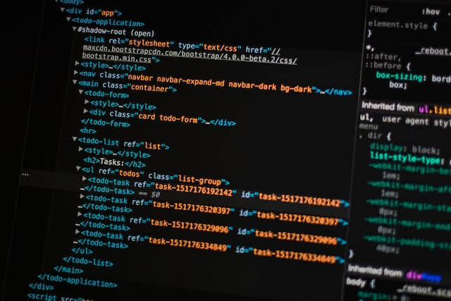

Como aprender HTML?

Autor: Bruno | Professor SENAI
HTML (Linguagem de Marcação de Hipertexto) é o código utilizado
para estruturar uma página web e seu conteúdo. Por exemplo,
podemos organizar o conteúdo em parágrafos, listas, imagens,
tabelas e diversos outros elementos.
Como o título sugere, este artigo apresenta uma compreensão
básica sobre HTML, sua estrutura e suas principais funções
no desenvolvimento de páginas web.
5 min de Leitura
Categoria: Programação
Referencia para Noticia OU Leia Mais
Aprenda CSS de forma simples

Autor: Mozilla
CSS (Folha de Estilo em Cascata) é o código que você usa para dar estilo à sua página Web. CSS básico apresenta tudo que você precisa para começar. Responderemos a perguntas do tipo: Como mudo meu texto para preto ou vermelho? Como faço para que meu conteúdo apareça em determinados lugares na tela? Como decoro minha página com imagens e cores de fundo?
9 min de Leitura
Categoria: Programação
Referencia para Noticia OU Leia Mais
Ciclone extratropical chega ao Brasil nesta quinta;

Autor: CNN BRASIL
O ciclone extratropical previsto para esta semana começa a se organizar nesta quinta-feira (20) entre o Rio Grande do Sul, o Uruguai e áreas próximas da Argentina. A formação do sistema ocorre simultaneamente ao avanço de uma frente fria, aumentando as condições para temporais, rajadas de vento e mudança brusca nas temperaturas em diversas áreas do Brasil.
Segundo o Inmet (Instituto Nacional de Meteorologia), a formação do ciclone na costa do Rio Grande do Sul aumenta a instabilidade na região e favorece o transporte de ar frio. A frente fria associada ao sistema avança pelo Sul e também influencia o sudoeste de Mato Grosso do Sul.
Acesse a Noticia
Terremoto de magnitude 6,7 atinge o Peru
/i.s3.glbimg.com/v1/AUTH_59edd422c0c84a879bd37670ae4f538a/internal_photos/bs/2026/P/5/It2NxyStqWFAcGYuh0EQ/captura-de-tela-2026-08-20-154107.jpg)
Autor: G1
Um terremoto de magnitude 6,7 atingiu nesta quinta-feira (20) o Peru, segundo o Serviço Geológico dos Estados Unidos (USGS). Não há relatos de estragos ou feridos. Também não há alertas de tsunami para a costa oeste da América Latina.
De acordo com o USGS, o epicentro foi registrado em uma área de cordilheira, a uma profundidade de 99 quilômetros. A organização norte-americana classificou o tremor como "muito forte" em algumas áreas.
Inicialmente, o Instituto de Geofísica do Peru informou que o terremoto teve magnitude 7,2 e ocorreu a uma profundidade de 108 quilômetros. O chefe da instituição, Hernando Tavera, disse que a profundidade do terremoto impediu que houvesse grandes danos.
Acesse a Noticia
Gustavo Gómez decide, Palmeiras vence o Cerro Porteño no Paraguai e espera por LDU ou Mirassol nas quartas da Libertadores

Autor: ESPN
O Palmeiras está nas quartas de final da CONMEBOL Libertadores. Nesta quarta-feira (19), após o empate por 1 a 1 no Nubank Parque, o Verdão visitou o Cerro Porteño no Defensores del Chaco, no Paraguai, e venceu por 1 a 0, ficando com a vaga na próxima fase.
Capitão do Palmeiras, Gustavo Gómez foi o herói do time em Assunção e foi o autor do gol que garantiu a equipe nas quartas, no fim do primeiro tempo.
5 min de Leitura
Categoria: Programação
Referencia para Noticia OU Leia Mais
Corinthians enfrenta o Rosario Central em decisão pelas oitavas de final da Copa Libertadores

Autor: Meu Timão
O Corinthians entra em campo na noite desta quinta-feira, pelo jogo de volta das oitavas de final da Copa Libertadores, Às 21:30, o Timão enfrenta o Rosario Central da argentina na NEO QUIMICA ARENA
9 min de Leitura
Categoria: Programação
Referencia para Noticia OU Leia Mais